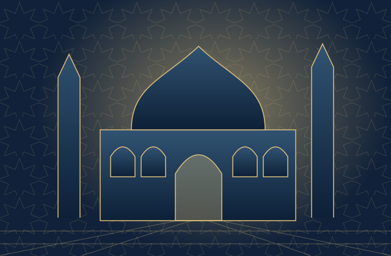
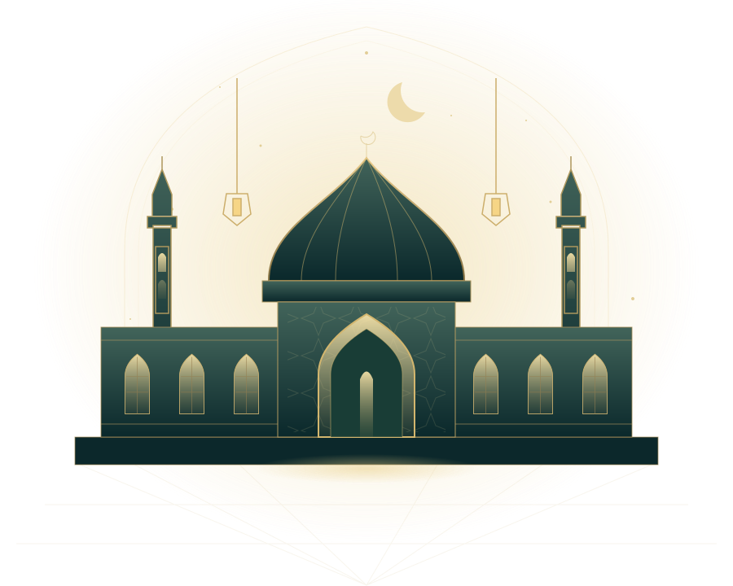

بازی تازه
نورِ آیهها
آیه را مرتب کن، واژهٔ گمشده را بیاب و سوره را بشناس؛ در صحن نورانی مسجد.

اینجا جایی برای آرام گرفتن، آموختن و با هم بازی کردن است. امروزت را با یک آیه روشن کن.

۰ نفر آنلاین
محفل در دسترس نیست؛ اتصال به سرور لازم است.
کاربران فعال در محفل
برای ورود، روی روم بزن
رکورد بازیکنان روی سرور
—
—
۰ پیام
—
کنترل محتوا، کاربران و سرور
صوت قاریان نامدار جهان — آیهبهآیه
خواندن، شنیدن و اندیشیدن
روی هر آیه بزن تا خوانده شود. متن هر سوره یک بار از اینترنت گرفته و روی دستگاه ذخیره میشود.
این مسیر تنها برای مدیر سامانه است و از نشانیِ مستقیم باز میشود.
نورستان · ورود مدیریت با تأخیرِ تدریجی محافظت میشود